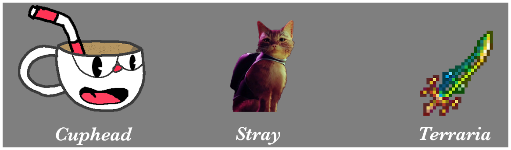

Indie games do not have the funding of big AAA companies and cannot necessarily produce games with realistic graphics. This affords them the opportunity to distinguish themselves with unique artstyles! Many AAA companies' gamesstrive for the best of the best in graphic ever, but ths tends to date them quite quickly within a couple years. Take a look at this screecap from the original Resident Evil released in 1996.
Looks old doesn't it! Resident Evil has become one of the most iconic video game series of all time, yet over the years the str style has not remained consistent with advancing technologies. Indie games, however, often do not have the resources to keep up with a large company like Capcom. They must take a much more stylistic approach. Take a look through the three games by indie developers that each take a different artistic approach to create a beautiful gaming experience each their own.
